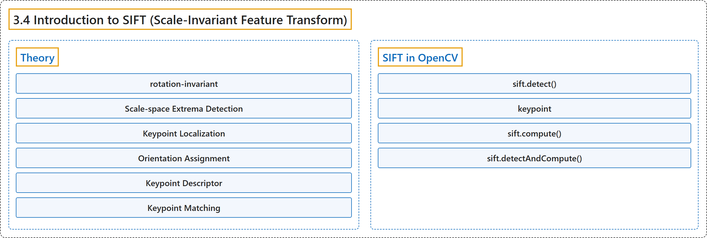

3.4 Introduction to SIFT (Scale-Invariant Feature Transform)
Classification

Glossary
| Term | Definition | 中文翻译 | Source |
|---|---|---|---|
| 3.4 Introduction to SIFT (Scale-Invariant Feature Transform) SIFT（尺度不变特征变换）简介 |
(context) "Lowe developed a breakthrough method to find scale-invariant features and it is called SIFT" | （语境）Lowe 提出了一种寻找尺度不变特征的突破性方法，称为 SIFT | OpenCV team, n.d.-a, "Feature Detection and Description", item 4 |
| Theory 理论 |
"In 2004, D.Lowe, University of British Columbia, came up with a new algorithm, Scale Invariant Feature Transform (SIFT) in his paper, Distinctive Image Features from Scale-Invariant Keypoints, which extract keypoints and compute its descriptors." | 2004 年，不列颠哥伦比亚大学的 D.Lowe 在论文 Distinctive Image Features from Scale-Invariant Keypoints 中提出了一种新算法：尺度不变特征变换（SIFT），它提取关键点并计算其描述子。 | OpenCV team, n.d.-b, "Theory", para. 2 |
| rotation-invariant 旋转不变 |
"They are rotation-invariant, which means, even if the image is rotated, we can find the same corners." | 它们是旋转不变的，意思是即使图像旋转了，也能找到相同的角点。 | OpenCV team, n.d.-b, "Theory", para. 1 |
| Scale-space Extrema Detection 尺度空间极值检测 |
"So, we can find the local maxima across the scale and space which gives us a list of (x,y,σ) values which means there is a potential keypoint at (x,y) at σ scale." | 于是可以求出跨尺度和空间的局部极大值，得到一组 (x,y,σ) 值，表示在 σ 尺度下 (x,y) 处有一个潜在关键点。 | OpenCV team, n.d.-b, "1. Scale-space Extrema Detection", para. 1 |
| Laplacian of Gaussian (LoG) 高斯拉普拉斯（LoG） |
(context) "LoG acts as a blob detector which detects blobs in various sizes due to change in σ." | （语境）LoG 充当斑点检测器，随着 σ 的变化检测各种大小的斑点。 | OpenCV team, n.d.-b, "1. Scale-space Extrema Detection", para. 1 |
| Difference of Gaussians (DoG) 高斯差分（DoG） |
"Difference of Gaussian is obtained as the difference of Gaussian blurring of an image with two different σ, let it be σ and kσ." | 高斯差分是用两个不同的 σ（设为 σ 和 kσ）对图像做高斯模糊所得结果之差。 | OpenCV team, n.d.-b, "1. Scale-space Extrema Detection", para. 2 |
| Keypoint Localization 关键点定位 |
"Once potential keypoints locations are found, they have to be refined to get more accurate results." | 找到潜在关键点的位置后，还要对它们加以细化以得到更准确的结果。 | OpenCV team, n.d.-b, "2. Keypoint Localization", para. 1 |
| Orientation Assignment 方向分配 |
"Now an orientation is assigned to each keypoint to achieve invariance to image rotation." | 现在给每个关键点分配一个方向，以实现对图像旋转的不变性。 | OpenCV team, n.d.-b, "3. Orientation Assignment", para. 1 |
| Keypoint Descriptor 关键点描述子 |
"So a total of 128 bin values are available. It is represented as a vector to form keypoint descriptor." | 于是共有 128 个直方柱值。把它表示为一个向量，就构成关键点描述子。 | OpenCV team, n.d.-b, "4. Keypoint Descriptor", para. 1 |
| Keypoint Matching 关键点匹配 |
"Keypoints between two images are matched by identifying their nearest neighbours." | 两幅图像之间的关键点通过找出它们的最近邻来匹配。 | OpenCV team, n.d.-b, "5. Keypoint Matching", para. 1 |
| SIFT in OpenCV OpenCV 中的 SIFT |
(No definition) | （无定义） | OpenCV team, n.d.-b, "SIFT in OpenCV" |
| sift.detect() detect 方法 |
"sift.detect() function finds the keypoint in the images." | sift.detect() 函数在图像中寻找关键点。 | OpenCV team, n.d.-b, "SIFT in OpenCV", para. 2 |
| keypoint 关键点 |
"Each keypoint is a special structure which has many attributes" | 每个关键点都是一种具有许多属性的特殊结构 | OpenCV team, n.d.-b, "SIFT in OpenCV", para. 2 |
| sift.compute() compute 方法 |
"Since you already found keypoints, you can call sift.compute() which computes the descriptors from the keypoints we have found." | 既然已经找到了关键点，可以调用 sift.compute()，它根据已找到的关键点计算描述子。 | OpenCV team, n.d.-b, "SIFT in OpenCV", item 1 |
| sift.detectAndCompute() detectAndCompute 方法 |
"If you didn't find keypoints, directly find keypoints and descriptors in a single step with the function, sift.detectAndCompute()." | 如果还没有找到关键点，可以用函数 sift.detectAndCompute() 一步直接求出关键点和描述子。 | OpenCV team, n.d.-b, "SIFT in OpenCV", item 2 |
References
OpenCV team. (n.d.-a). Feature Detection and Description. OpenCV-Python Tutorials (Version 4.13.0). Retrieved October 31, 2026, from https://docs.opencv.org/4.x/db/d27/tutorial_py_table_of_contents_feature2d.html
OpenCV team. (n.d.-b). Introduction to SIFT (Scale-Invariant Feature Transform). OpenCV-Python Tutorials (Version 4.13.0). Retrieved October 31, 2026, from https://docs.opencv.org/4.x/da/df5/tutorial_py_sift_intro.html